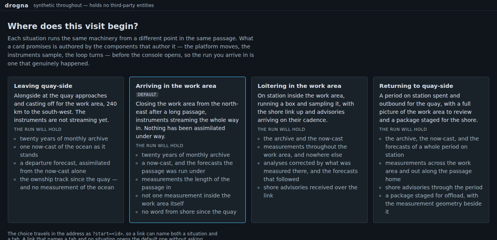

The expensive part of a tick was not the part doing the science

The background
This simulation opens the same way every time: a vessel that has been at sea for zero seconds. The track, the assimilation, the package for shore — none of it exists until it has been running a while.
The obvious fix is to write plausible data into the stores at startup. We had forbidden that: seeded data must come from the code that produces it live, or the demo is a picture of a system rather than a system.
The requirement
Offer a few situations to begin in — leaving the quay, arriving on task, working the area, heading home — and make each true by actually having run.
The options considered
So the page picks a situation and then plays the simulation forward before showing you anything, through the same controls a user can press by hand.
That took twenty-five seconds, and we guessed wrong twice about where it went. Not the assimilation — matrix algebra looks expensive and cost a second a cycle. It was the route planner, searching for a survey track every ten simulated minutes. Then, with that off, the ocean generator, rebuilding a field every fifteen and having all but the last one discarded.
So the ocean is built once, at build time, and shipped — the thing we had forbidden, unless a check rebuilds it and fails if one byte differs from what the generator would produce now. It compresses to 0.43 MB, and the situations open in 1.5 to 5 seconds.
The demo
Open the welcome page and pick one. Then compare Leaving quay-side with Returning to quay-side in the same tab — same code, same ocean, a different amount of it having happened: